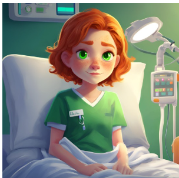
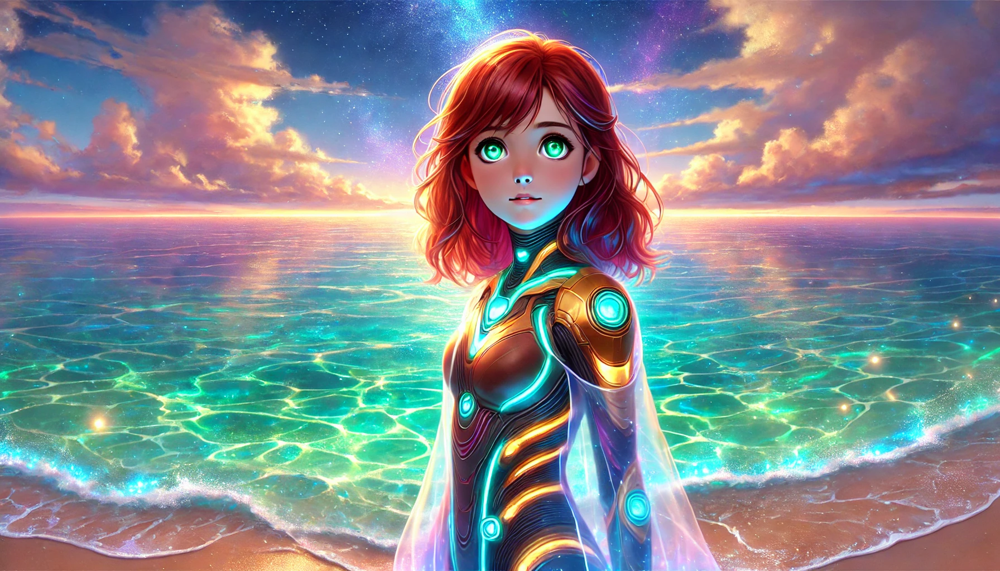
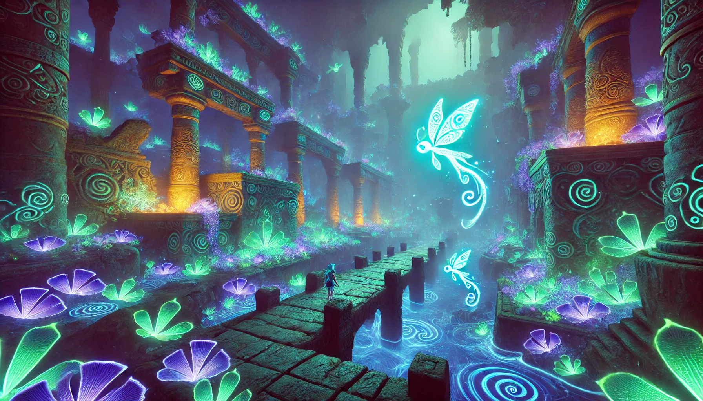
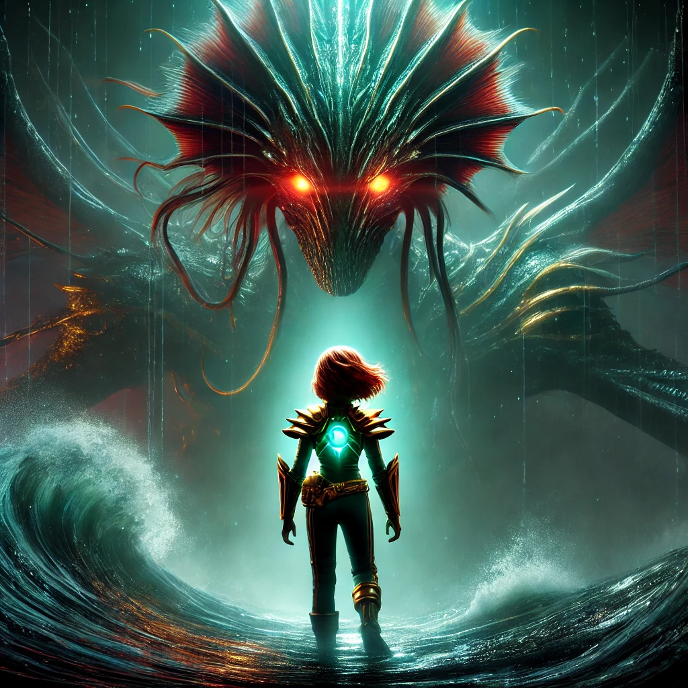
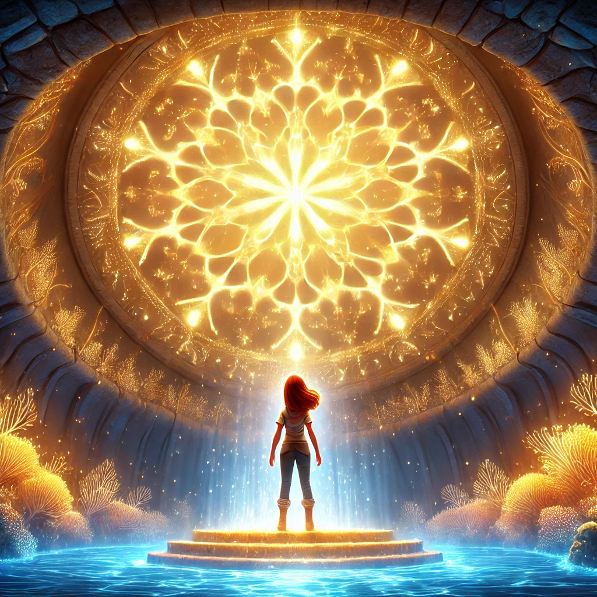
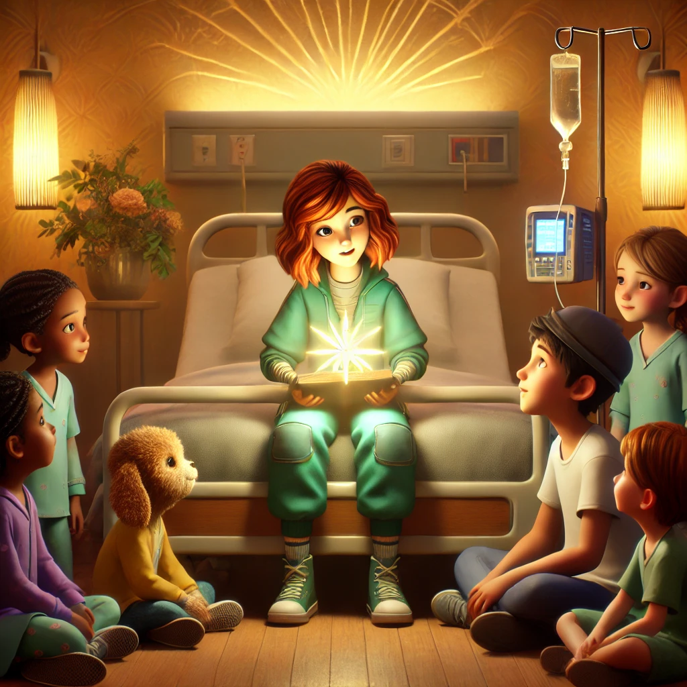

The Light of Lumina
Dive into the magical journey with Callie and Zephyr.

Callie Marlowe
An adventurous young explorer driven by her dream to bring hope and healing through the magical light of Lumina.

Zephyr
A playful, wise sea-dragon who guides Callie with riddles, encouragement, and a touch of mischief.
Prologue: The Tale of Lumina
Callie Marlowe is a spirited young girl confined to a hospital bed due to a chronic illness. Despite her challenges, she escapes into the mythical story of Lumina, a city holding a healing light, told nightly by her mother. One day, after a difficult treatment setback, Callie dreams of plunging into the ocean, determined to find Lumina and its light—not just for herself, but for others like her.
Chapter 1: The Call to Adventure
In her dreamlike state, Callie stands at the edge of a glowing ocean. Diving in, she transforms—breathing underwater and moving freely, feeling strong for the first time in years. She meets Zephyr, a playful sea dragon, who challenges her to navigate a twisting coral maze, pushing her to overcome self-doubt and embrace her inner strength.
Chapter 2: The Glowing Ruins
Guided by Zephyr, Callie ventures into the glowing ruins of Lumina. She faces collapsing pathways, swirling currents, and eerie sea creatures guarding ancient secrets. Amid the challenges, she discovers inscriptions that reveal Lumina’s light responds to resilience and hope. Callie begins to confront her frustration about her illness and finds a newfound determination to continue.
Chapter 3: The Monster of the Abyss
At the entrance to Lumina’s core, Callie confronts the Guardian of Shadows, a leviathan that embodies despair and fear. It projects illusions of Callie’s hospital room and moments of helplessness, testing her resolve. With Zephyr’s encouragement, Callie embraces her hope and shouts back at the Guardian, breaking through the illusions and dissolving it into harmless shadows.
Chapter 4: Lumina’s Heart
Reaching the heart of Lumina, Callie finds a radiant chamber pulsating with light. The light responds to her emotions, amplifying the strength and hope within her. Zephyr reassures her that the light is for anyone brave enough to believe in it. Callie realizes that Lumina’s light isn’t a cure, but a source of resilience. She feels connected to others like her, inspired to share this newfound hope.
Epilogue: Sharing the Light
Callie awakens with a renewed sense of purpose. She shares her dream of Lumina with the children in the hospital, inspiring them to find hope in their own battles. Though her illness remains, she becomes a source of light for others, supported by her mother, who vows to continue researching ways to bring joy and healing to children in need.